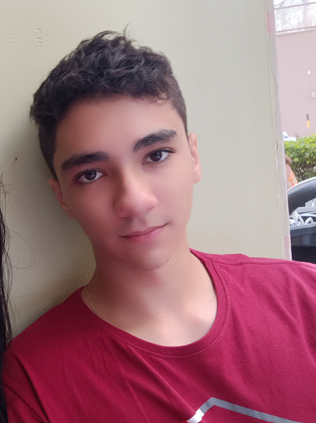

Bem-vindo à minha Landing Page
Olá, meu nome é Pedro Scopel Margon, estudante de desenvolvimento web na Universidade Vila Velha. Apaixonado por academia e jogos, estou atualmento cursando ciências da computação na UVV.
Sobre Mim
Meu objetivo é conseguir me formar, para eu começar a atuar nas minhas areás de interesse.
Hobbies
Gym: Vou na academia muitas vezes na semana, focando em musculação. Games: Gosto muito de jogos voltados para o RPG
Formação Acadêmica
| Período | Instituição | Curso |
|---|---|---|
| 2022-2024 | SEB | Ensino Médio |
| 2025-Presente | Universidade Vila Velha | Ciência da Computação |
Matérias Atuais
Lógica da Computação, Fundamentos da Computação, Desenvolvimento Web (HTML, CSS, JavaScript), Banco de Dados, UX Design.
Eventos
Ainda não participei de nenhum evento, mas espero conseguir.
Planos Futuros
Ainda não me decidi, estou com dúvidas em duas áreas de interesse dentro da tecnologia.